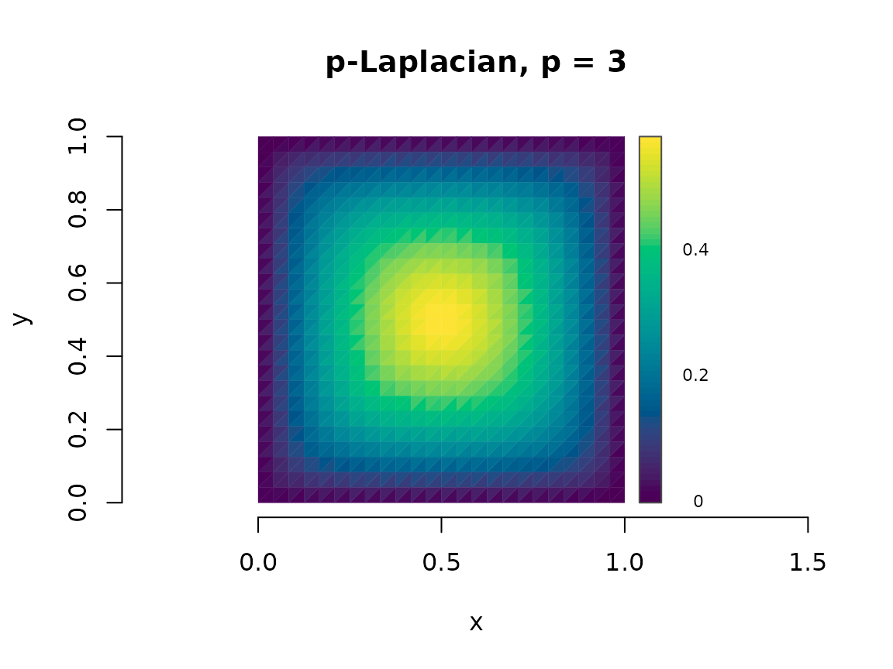

Residual form
nonlinear_problem() covers quasilinear diffusion with a
semilinear reaction,
-\nabla\cdot(k(u)\nabla u) + g(u) = f,
and p_laplace_problem() the regularized p-Laplacian
-\nabla\cdot((|\nabla u|^2 +
\varepsilon^2)^{(p-2)/2}\nabla u) = f. The discrete residual
is
F_i(\mathbf U) = \int k(u_h)\nabla u_h\cdot\nabla\phi_i + g(u_h)\phi_i - f\phi_i\,dx - (\text{boundary terms}),
and Newton’s method solves J(\mathbf U_k)\,\delta = -F(\mathbf U_k), \mathbf U_{k+1} = \mathbf U_k + \lambda\delta, with the consistent Jacobian
J_{ij} = \int k(u_h)\nabla\phi_j\cdot\nabla\phi_i + k'(u_h)\phi_j\,\nabla u_h\cdot\nabla\phi_i + g'(u_h)\phi_j\phi_i\,dx .
The step length \lambda is halved until the residual norm decreases (backtracking line search). The derivatives k' and g' can be supplied; otherwise they are approximated by central differences.
A manufactured quasilinear problem
With k(u) = 1 + u^2 and u = \sin\pi x\sin\pi y, the source is f = k(u)\,2\pi^2u - 2u|\nabla u|^2.
exact <- function(x, y) sin(pi * x) * sin(pi * y)
gradient <- function(x, y) cbind(pi * cos(pi * x) * sin(pi * y), pi * sin(pi * x) * cos(pi * y))
k <- function(u) 1 + u^2
f <- function(x, y) {
u <- exact(x, y); g <- gradient(x, y)
k(u) * 2 * pi^2 * u - 2 * u * (g[, 1]^2 + g[, 2]^2)
}
prob <- nonlinear_problem(pde_mesh_rectangle(nx = 16), diffusion = k,
diffusion_derivative = function(u) 2 * u,
source = f, bcs = dirichlet_bc(0))
sol <- solve_pde(prob)
sol$newton
#> iteration residual step
#> 1 0 7.850530e-01 NA
#> 2 1 1.213728e-01 1
#> 3 2 3.421530e-03 1
#> 4 3 2.188875e-06 1
#> 5 4 6.670955e-13 1The residual history shows quadratic convergence: the number of correct digits roughly doubles in each step. The discretization error behaves as in the linear case:
convergence_study(prob, exact, gradient, mesh_sizes = c(8, 16, 32))
#> Mesh convergence study
#> h ndof L2 H1_semi rate_L2 rate_H1_semi
#> 0.17678 81 0.018275 0.4324 NA NA
#> 0.08839 289 0.004644 0.2176 1.976 0.9906
#> 0.04419 1089 0.001166 0.1090 1.994 0.9977Semilinear reaction
f2 <- function(x, y) 2 * pi^2 * exact(x, y) + exact(x, y)^3
p2 <- nonlinear_problem(pde_mesh_rectangle(nx = 16), reaction = function(u) u^3,
reaction_derivative = function(u) 3 * u^2, source = f2, bcs = dirichlet_bc(0))
s2 <- solve_pde(p2)
errornorm(s2, exact, "L2")
#> [1] 0.005049698
#> attr(,"norm")
#> [1] "L2"
#> attr(,"gradient")
#> [1] "exact"The p-Laplacian
For p = 3 the diffusivity grows with the gradient. The regularization \varepsilon > 0 keeps the Jacobian nonsingular where \nabla u = 0; the Jacobian contains the tensor k I + (p - 2)(|\nabla u|^2 + \varepsilon^2)^{(p-4)/2}\nabla u\nabla u^\top.
pl <- p_laplace_problem(pde_mesh_rectangle(nx = 24), p = 3, source = 10, bcs = dirichlet_bc(0))
spl <- solve_pde(pl)
spl$newton
#> iteration residual step
#> 1 0 8.511676e-01 NA
#> 2 1 1.500854e-01 1
#> 3 2 1.036201e-02 1
#> 4 3 1.372507e-04 1
#> 5 4 2.366676e-07 1
#> 6 5 7.762651e-13 1
lin <- solve_pde(poisson_problem(pl$mesh, source = 10, boundary = dirichlet_bc(0)))
c(p_laplace = max(spl$u$values), laplace = max(lin$u$values))
#> p_laplace laplace
#> 0.5898417 0.7357080
plot(spl, main = "p-Laplacian, p = 3")
When Newton fails
Newton’s method converges only from a good enough initial guess. pdecompR starts from the solution of the linearized problem, uses a line search, and reports failure instead of returning an unconverged iterate silently:
hard <- nonlinear_problem(pde_mesh_rectangle(nx = 8), diffusion = function(u) 1 + u^2,
source = 50, bcs = dirichlet_bc(0))
res <- tryCatch(solve_pde(hard, maxit = 1), warning = function(w) conditionMessage(w))
res
#> [1] "Newton did not converge in 1 iterations (residual 6.954, initial 25.15)."With enough iterations the same problem converges:
solve_pde(hard)$newton
#> iteration residual step
#> 1 0 2.514537e+01 NA
#> 2 1 6.954222e+00 1
#> 3 2 1.334002e+00 1
#> 4 3 8.674478e-02 1
#> 5 4 3.783451e-04 1
#> 6 5 6.510843e-09 1
#> 7 6 4.818931e-15 1